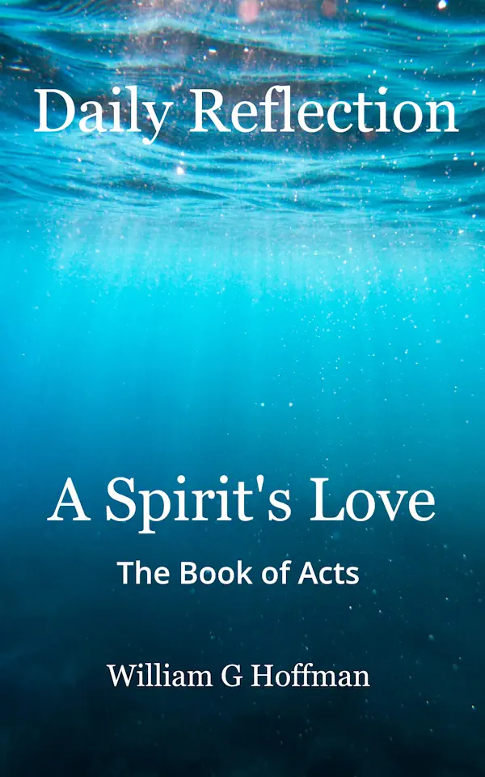

A Father's Love
Begin a daily journey of Scripture, reflection, and prayer centered on knowing and trusting God as Father.
Learn MoreDiscover Christian devotional books offering Scripture, personal reflection, and prayer to encourage your daily walk with Jesus Christ.
Daily Reflection for the Soul
A growing collection of devotional journeys through Scripture, written to encourage reflection, prayer, and a closer walk with God.
Begin a daily journey of Scripture, reflection, and prayer centered on knowing and trusting God as Father.
Learn MoreWalk through the Gospel of John and encounter Jesus Christ, the Word made flesh and the Light of the world.
Learn More
Journey through Acts and follow the work of the Holy Spirit as the gospel moves from Jerusalem toward the world.
Learn MoreReflection on the letters of the apostles and the stories of Ruth and Esther.
Learn MoreDaily Reflections
Follow William's ongoing reflections on Scripture, faith, and everyday life with Christ at Journey in Faith.
Visit Journey in FaithConnect with William
Connect with William on Goodreads to explore his books and follow his writing journey.
Connect on Goodreads